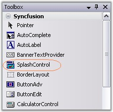
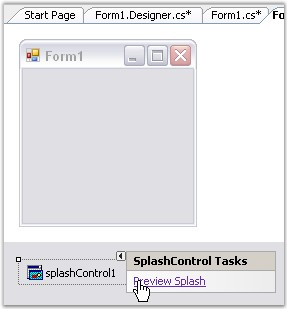
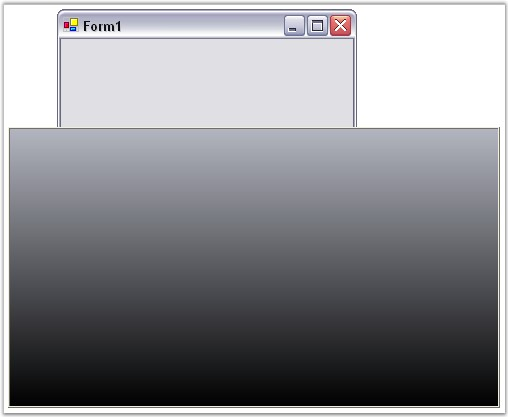

The SplashControl provides full support for the Windows Forms designer.
1. Drag and drop the SplashControl from the toolbox onto the form. The SplashControl will be created in the components area of the form.

Figure 980: SplashControl in Toolbox
2. Set the SplashImage and the TimerInterval properties through the property grid.
3. Set the AutoMode property. This property controls how the SplashControl will be invoked. If the AutoMode property is set to 'True', the SplashControl will automatically launch itself during the parent form's load event.
4. The SplashPanel can also be viewed at design time using the Preview Splash option by clicking the smart tag as shown below.

Figure 981: "Preview Splash" option displayed in the Smart Tag
5. Now run the application.
6. If the AutoMode property is set to 'False', the splash screen will have to be invoked explicitly by calling the ShowSplash() method.
7. Handle the SplashClosed event to do your processing after the splash screen is closed.

Figure 982: SplashControl created Through Designer
8. You can cancel the SplashControl while it is displaying the splash screen by calling the HideSplash() method.
See Also
Through Code, SplashScreen Settings